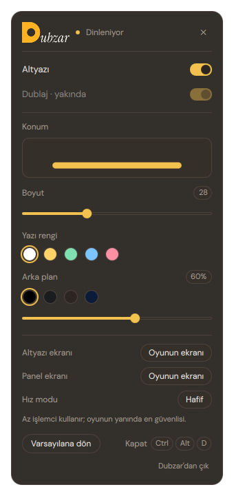

Oyunlar için Türkçe altyazı
Oyun İngilizce. Altyazı Türkçe.
Dubzar oyunun ekranındaki yazıyı ve konuşmasını okur, Türkçesini oyunun üstünde gösterir. Oyunun dosyalarına ya da belleğine dokunmaz.


Bu panel çalışıyor: ayarlayın, soldaki altyazı değişsin.
Nasıl çalışır
Bir altyazının yarım saniyelik yolu.
Ekrana yeni bir satır çıktığı anda bu dört adım arka planda çalışır. Süreler bizim test düzeneğimizde ölçüldü.
Görür
Altyazının çıktığı şeridi ekrandan alır. Yalnızca değişen yere bakar.
≈ 0,03 snOkur
Yazıyı tanır. Ekran kartı varsa yaklaşık altı kat hızlı.
0,09 sn kartta, 0,55 sn işlemcideÇevirir
Çeviri bilgisayarınızdaki modelle yapılır, internet gerekmez.
≈ 0,06 snGösterir
Türkçe altyazı oyunun üstünde, seçtiğiniz boyutta ve yerde belirir.
hemenÖlçüm: RTX 4060 dizüstü bilgisayar, tek satırlık altyazı şeridi. Sahneye ve bilgisayara göre değişir.
Hız modları
Bilgisayarınıza göre seçin.
Daha hızlı mod altyazıyı daha erken gösterir, karşılığında işlemciyi ve ekran kartını daha çok kullanır. Bunu panelde de açıkça yazıyoruz.
Süre: ekranda altyazı çıktıktan Türkçesi görünene kadar ortalama (Hafif ≈ 1,0 sn, Yüksek ≈ 0,4 sn; Orta bu ikisinin arasında). Çubuklar kabaca karşılaştırma içindir. Yüksek mod NVIDIA ekran kartı gerektirir.
Ayar paneli
Oyunu bırakmadan ayarlayın.
Ctrl Alt D ile açılır, oyunun odağını çalmaz. Soldaki, uygulamanın kendi paneli.
- Boyut, konum, renkAltyazıyı ekranda nereye ve nasıl isterseniz oraya koyun.
- Hız moduHafif, Orta, Yüksek. Her birinin ne kadar kaynak kullandığı yazıyor.
- Hangi ekrandaBirden fazla monitörde altyazı ve panel ayrı ekranlarda olabilir.

Karışmaz
Her yazı kendi yerinde.
Oyunlarda aynı anda birden fazla yazı olur. Dubzar bunları birbirine karıştırmaz.
PC, PlayStation, Xbox
Oyun nerede çalışırsa çalışsın.
Dubzar oyunun içine girmediği için bilgisayardaki oyunlarla da, yakalama kartı üzerinden konsolla da çalışır. Konsol oynarken bilgisayarın ekran kartı boştadır: Yüksek mod tam bu iş için.
Sorular
Merak edilenler.
Oyuna zarar verir mi?
Dubzar oyunun dosyalarını ya da belleğini okumaz, değiştirmez. Yalnızca ekrandaki görüntüyü ve çıkan sesi dinler. Çevrimiçi bir oyunun kendi kuralları için o oyunun şartlarına bakmanızı öneririz.
Verilerim bir yere gidiyor mu?
Hayır. Okuma ve çeviri bilgisayarınızda yapılır; ses ve ekran görüntüsü gönderilmez. Yalnızca lisans anahtarı doğrulaması için küçük bir istek yapılır.
Çeviri ne kadar doğru?
Oyun diyaloğu için ayrı eğitilmemiş, genel bir çeviri modeli kullanır. Günlük konuşmada iyidir, deyim ve argoda hata yapabilir. Karakter adları ve oyun terimleri için kendi sözlüğünüzü ekleyebilirsiniz.
Altyazı ne kadar sürede çıkar?
Metin ekrana geldikten sonra Hafif modda ortalama bir saniye, Yüksek modda yaklaşık dörtte üç saniyeden kısa. Çok hızlı konuşmada bazen kısa gecikme olabilir.
Bilgisayarımda çalışır mı?
Windows 10 ya da 11 (64 bit), en az 8 GB bellek önerilir. Hafif ve Orta mod ekran kartı istemez; Yüksek mod için NVIDIA kartı gerekir. Kurulum Python 3.12 ister, yoksa kurulum sizin için kurmayı önerir. Diskte yaklaşık 1,1 GB yer tutar.
Dubzar
Tek seferlik, sade.
- Kurulum paketi ve lisans anahtarı
- Güncellemeler dahil
- Üç hız modu, istediğiniz kadar oyun